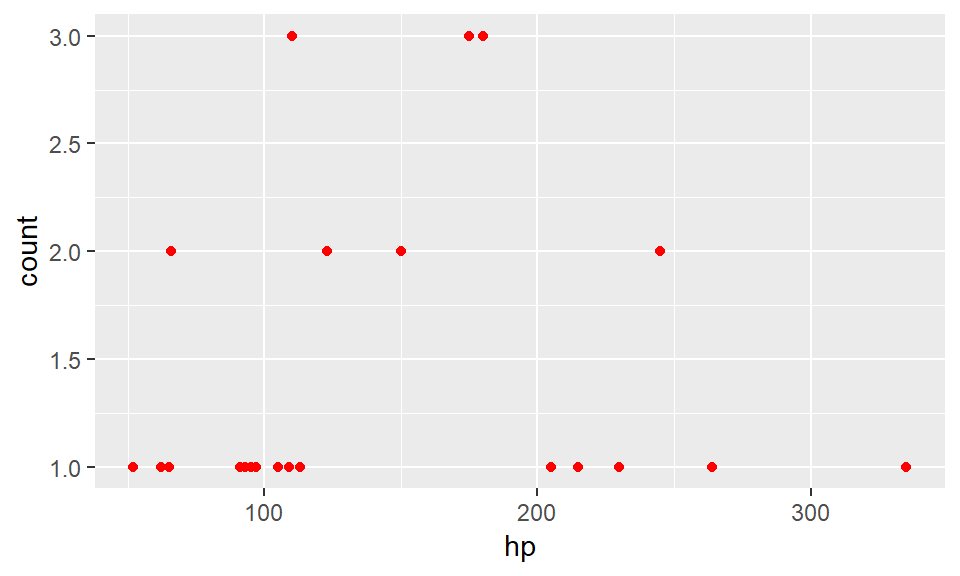
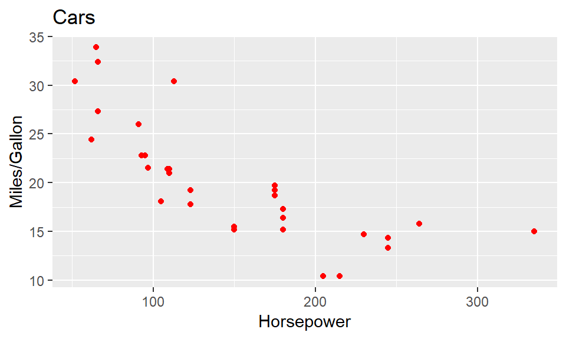

8 Charts
There are various ways to create charts, static or interactive, in R.
8.0.1 Static charts with ggplot2
Static charts can be created with ggplot2 (in PNG format). By default they have a width=7 and height=5. You can alter this in the code chunk options: {r fig.width=8, fig.height=4}
For full reference see: http://ggplot2.tidyverse.org/reference/index.html
# The 1st argument in ggplot() should be the name of your dataframe;
# The 2nd argument should be an aesthetic attribute - this defines which variables will be on the x and y axes.
# You can now add 'Layers' to the ggplot object using the + symbol. You must have at least one 'geom' layer that specifies what type of chart it is (eg. geom_bar, geom_point, geom_line etc..) To flip a bar chart from vertical to horizontal use ‘coord_flip’

There are various option for changing the colour and width [0-1] of the bars
ggplot2::ggplot(mtcars, aes(x = cyl)) +
geom_bar(stat="count", fill="orange", colour="blue", width=0.8)
The x and y axes may not always start from 0. To force this use a ‘expand_limits’

# The y axis goes below 0 by default. To fix this use 'scale_y_continuous':
ggplot2::ggplot(mtcars, aes(x = cyl, y = mpg)) +
geom_point(colour="red") +
expand_limits(y = 0) +
scale_y_continuous(expand=c(0,0))
By default the axes labels are based on variable names. To change these or add a title use a ‘labs’ layer:
ggplot2::ggplot(mtcars, aes(x = cyl, y = mpg)) +
geom_point(stat="identity", fill="orange", colour="blue") +
labs(y = "Miles per gallon", x = 'Cylinders') +
labs(title = "Cars")
You can have multiple layers, for example bars and points

You can change the appearance of most elements of the chart use a ‘theme’ layer, including:
* Change the appeareance of axes (axis.line)
* Change the plot area (panel.background)
* Add/Remove/Change the gridlines (panel.grid.major.x & panel.grid.major.y)
* Change the position and size of the title (plot.title)
ggplot2::ggplot(mtcars, aes(x = cyl, y = mpg)) +
geom_point(stat="identity", fill="orange", colour="blue") +
expand_limits(y = 0) +
scale_y_continuous(expand=c(0,0)) +
theme( axis.line = element_line(colour = "black", size = 0.75, linetype = "solid")
,panel.background = element_blank()
,panel.grid.major.y = element_line(colour = "black", size = 0.25, linetype = "solid")
,plot.title = element_text(hjust = 0.5) ) 
8.0.2 Interactive charts with ggiraph
The ggiraph package extends ggplot and allows interactivity.
## Warning: package 'ggiraph' was built under R version 3.4.48.0.3 Interactive charts with dygraph
For interactive time series charts you can use the dygraph package which is related to the dygraph javascript library.
library(dygraphs)
lungDeaths <- cbind(mdeaths, fdeaths) #Creates the data set for the graph
dygraphs::dygraph(lungDeaths) # Displays the chart with default settings#It is possible to add a range selector under the chart
dygraphs::dygraph(lungDeaths) %>% dygraphs::dyRangeSelector()There are lots of options that can be changed such as axis labels, legends, and colours.